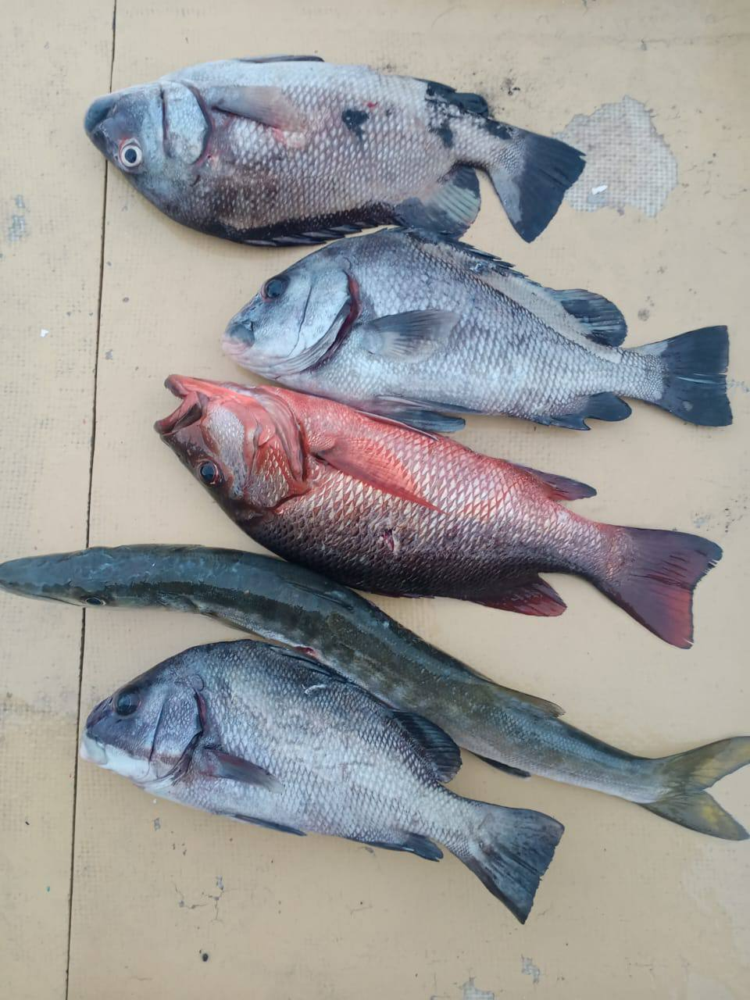
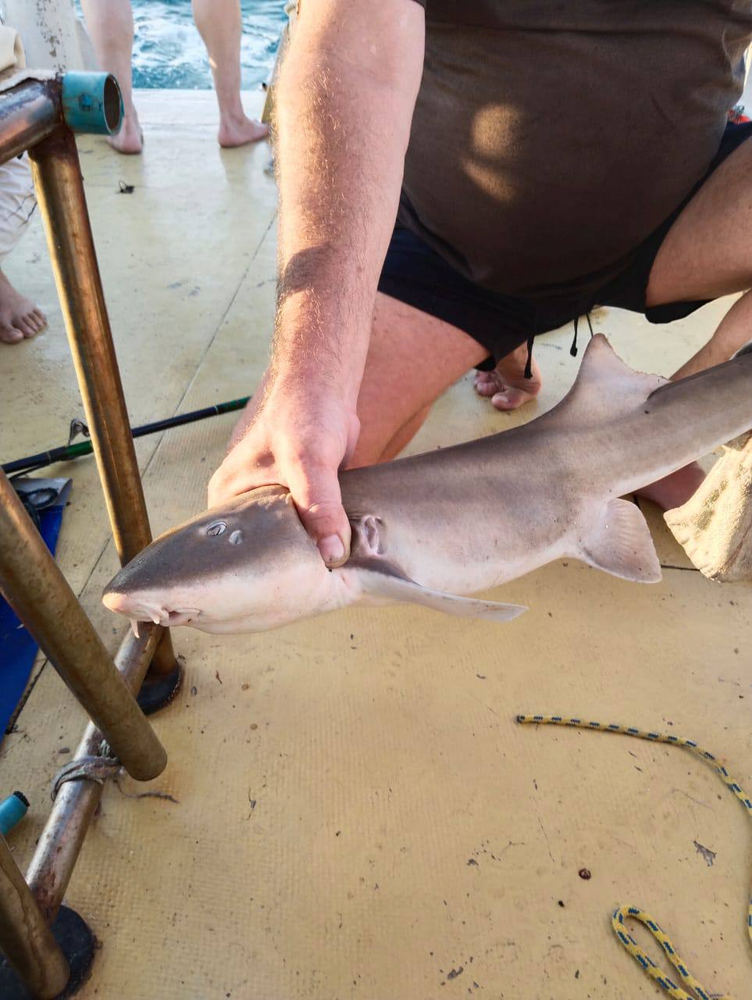
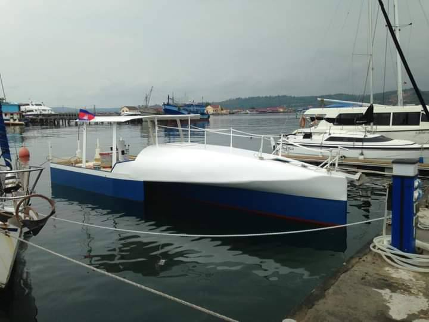

Рыбалка в Камбодже
Не про трофеи — про атмосферу, воду и ощущение настоящего опыта
Рыбалка в Камбодже — это не столько про улов, сколько про состояние. Рассветы и ночи на воде, тишина, звёзды, лодка и ощущение полной оторванности от суеты. Это спокойный, медитативный формат отдыха, который легко превращается в небольшое приключение.
Мы предлагаем разные форматы рыбалки — от лёгкой дневной прогулки до ночёвки на воде и по-настоящему необычных маршрутов.
Рыбалка на озере Тонлесап
Озеро Тонлесап — сердце пресноводной Камбоджи. Рыбалка здесь проходит на лодке среди каналов и открытой воды, в окружении плавучих деревень и бескрайнего горизонта. Возможен дневной формат или выход к закату с ужином прямо на воде.
Для желающих доступна ночная рыбалка или рыбалка с ночёвкой на лодке. Вечером озеро становится особенно тихим: зажигаются огни домов, слышны только плеск воды и звуки природы.
Морская рыбалка в Сиануквиле
Морская рыбалка — это другой характер и другое настроение. Выход в море на лодке, солёный воздух, волны и ощущение простора. В зависимости от сезона ловят морскую рыбу, кальмаров и другие виды.
Рыбалку можно совместить с купанием, остановками у островов и обедом на борту. Часто такой выезд становится частью пляжного отдыха.
Ночная рыбалка — особая атмосфера
Ночная рыбалка возможна как на озере, так и в морских форматах. Это прохлада, звёздное небо, тишина и концентрация на процессе. Часто именно ночью сам опыт становится особенно глубоким и запоминающимся.
Змееглавы на рисовых полях
Самый необычный формат — ловля змееглава на затопленных рисовых полях. В сезон дождей поля превращаются в мелководные озёра, где прячется эта сильная и агрессивная рыба.
Рыбалка проходит пешком или с небольшой лодки, среди зелёных полей и открытого неба. Это живой, немного дикий и очень аутентичный опыт, который ценят те, кто ищет нестандартные маршруты.
Что делает рыбалку в Камбодже особенной
Здесь рыбалка легко превращается в отдых без спешки — с ужином на воде, ночёвкой на лодке, разговорами под звёздами или просто тишиной вокруг. Мы подбираем формат под настроение и опыт — от лёгкой прогулки до настоящего приключения.


